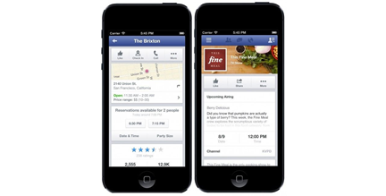

View Site
Costco travel uses white space and clean design to improve its readability, creates margins between paragraphs, balance between element of different visual weight. It also creates relationships and visual hierarchy between element.
Visual Hierarchy
Facebook Login Page
Facebook Login Page

Facebook login page is a best example of Visual Hierarchy which shows different size text, font,color of text which make it standout and easy to follow when trying to set up a facebook account.
Hick's Law
Costco
ebay.com

Ebay is one of the best example of Hick's law because it states that the more options are available to a person, the longer it will take for him or her to make a decision about which option is best. Not only you type of what you looking for but you need to search under what it classified on.